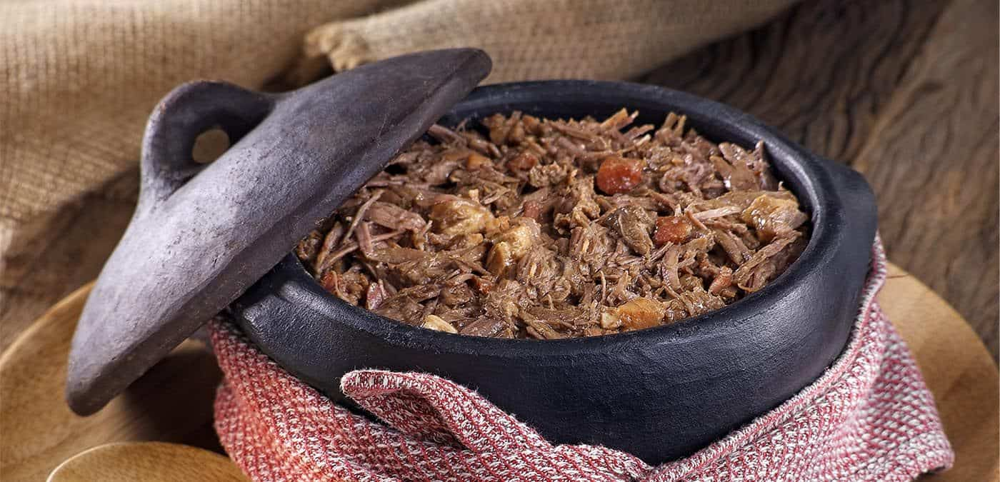
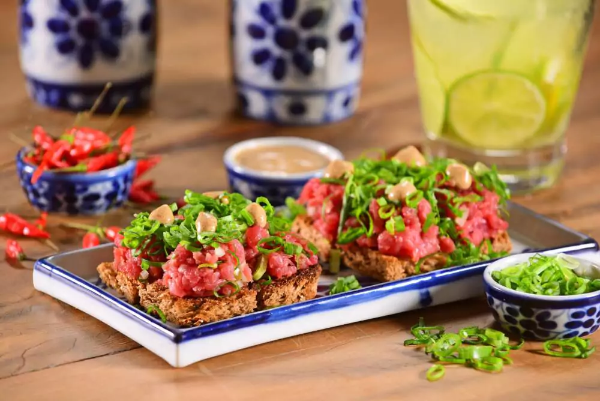

Barreado
O barreado é a comida típica do Paraná mais famosa. Essa carne é cozida até desmanchar na panela de barro é uma das marcas registradas de Morretes, tradicional cidade litorânea do Estado.
Carne de Onça
Subindo a serra e chegando na capital, temos a grande representante da gastronomia de Curitiba: a carne de onça. Esse patrimônio cultural da cidade, inspirado no prato alemão hackepeter, é o pedido certo para o happy hour, combinando muito bem com chopp ou outros drinks.
Porco no Rolete
Porco no rolete Não se pode falar em gastronomia do Paraná sem mencionar o porco no rolete. Comida típica do oeste do Estado, especialmente do município de Toledo, esse prato demora horas para ficar pronto, mas a espera vale muito a pena. O preparo consiste em deixar um porco submerso em um tempero de vinhos e especiarias por 10 horas. Em seguida, ele é espetado no rolete e assado na brasa, girando uniformemente entre 6 e 8 horas..